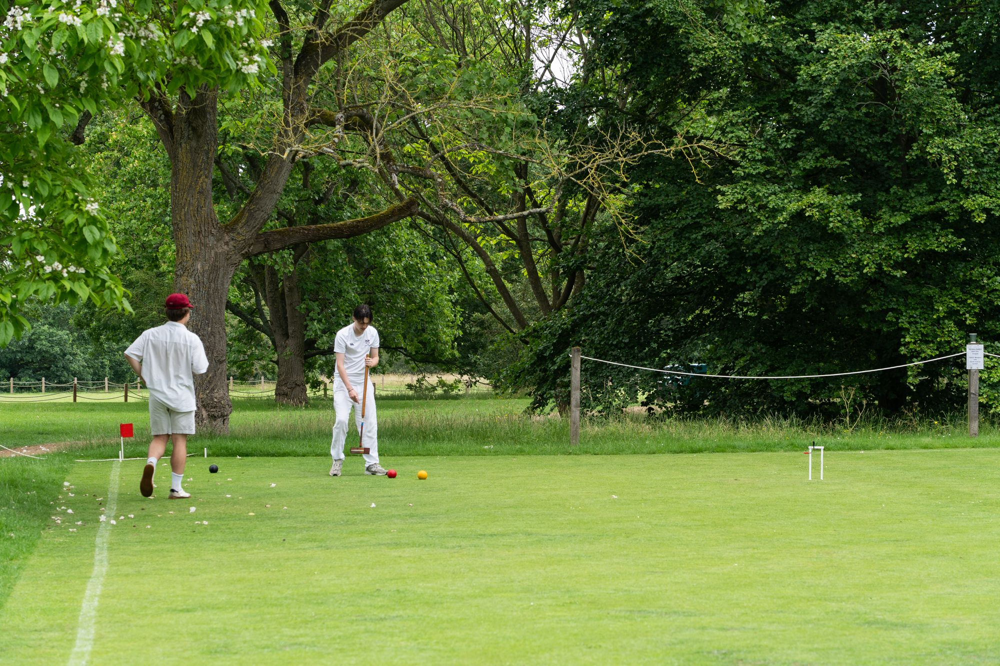

If you enter The University Parks by the Keble road entrance off Parks Road, you should take the right-hand path then go right at the fork. You will see the lawns on your right after 240 m.
From the Linacre entrance (South Lodge), keep left for 200 m and the lawns are on your left.
What Three Words location " body.ears.feeds".
Google maps: OUACC Lawns.
Apple Maps: OUACC Lawns.
GPS coordinates: 51.7601804,-1.2530324 (lat,lon)
Sat Nav: The nearest postcode is OX1 3JA (South Lodge Entrance on South Parks/St Cross road). Parking permits for visiting teams can occasionally be arranged dependent on other events in the Parks; contact the Club Captain. There is no public parking in the Parks.